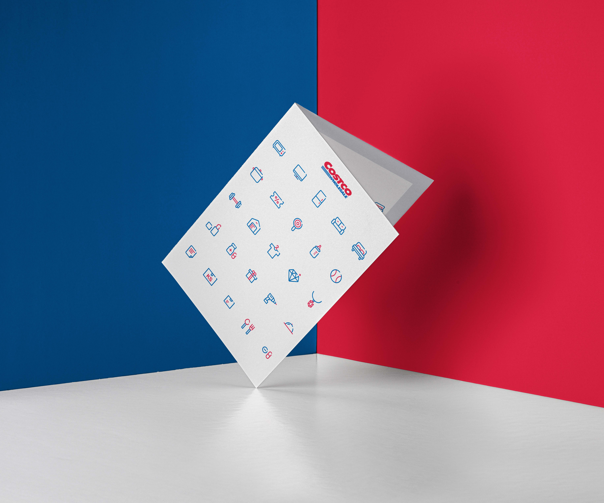

works
UI KIT - SOCAR

국내 카셰어링 1등 서비스 쏘카
Socar Widget Design

ipad top view

ipad & iphone X

직관적인 ui와 간편한 기능들을 추가해 사용자가 더 쉽게 이용할 수 있게끔 Ui kit 제작
typography - visual communication
타이포그래피 - 비주얼커뮤니케이션 (motion)
typo essay

직지고딕과 프루티거의 타이포 에세이
프루티거 크기와 무게 모션포스터

Costco icon
코스트코의 메인컬러를 이용해 사용자가 인식하기 쉽게 아이콘들을 심플하게
만들었고, 실제 웹사이트 카테고리 별로 제작한 결과물
Costco icon
Seacher App Design
Seacher - Project Studio


시쳐 앱 디자인
오팔세대를 주제로 액티브시니어와 학생들이 함께 어울려 시너지를 낼 수 있는 어플리케이션 컨셉 제작
3D design - Oasis
오아시스
배경화면용으로 만들었던 개인작업 3d 디자인이다.
현실에서 벗어나 가끔씩 휴양지에 가고싶은 마음을 그리며 제작을 했다.
코로나가 얼른 사라져서 모두가 옛날의 일상으로 돌아갔으면 좋겠다